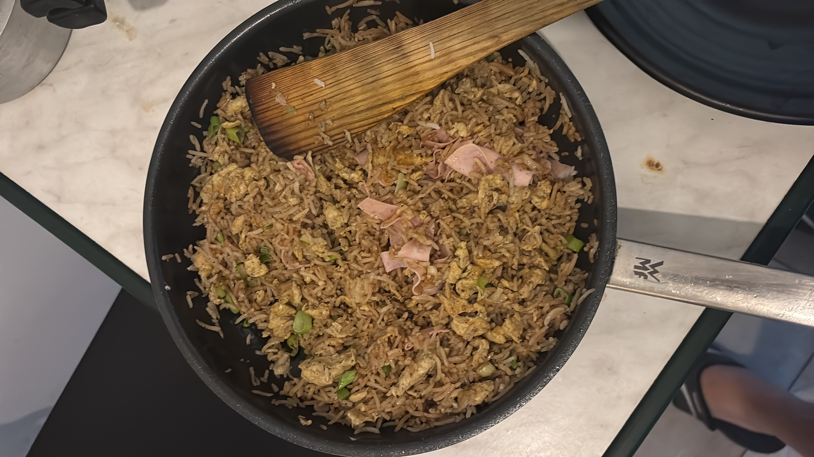

Egg Fried Rice
Home

What is Fried Rice?
Ever heard about Uncle Roger, I know you did, so lets
make a fried rice which doesn't wont him.
Fried rice is one of most, if not the most famous dish in the world.
Day old rice, some eggs, some veggies and some MSG(yum yum), That's all
that's needed to make an amazing egg fried rice.
Ingredients
- 1 tablespoon vegetable oil
- 5 cloves of garlic, minced
- 2 shallots, diced
- 3 eggs
- 3 cups of leftover rice
- 1 tablespoon white pepper
- 1 tablespoon MSG
- 3 sticks spring onions diced
- 2 shallots
Sauce
- 3 cloves garlic, minced
- 3 cloves worth of ginger, minced
- 1 tablespoon dark soya sauce
- 1 tablespoon light soya sauce
- 1 tablespoon sesame oil
Method
- Heat up peanut oil in a wok.
- Add garlic and shallots. Stir fry until they have some colour
- Add eggs and stir fry until they are cooked
- Add rice and mix
- Add white pepper and MSG
- Add sauce mixture
- Add spring onion for last few seconds of cooking as garnish